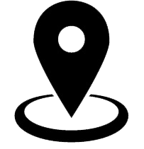
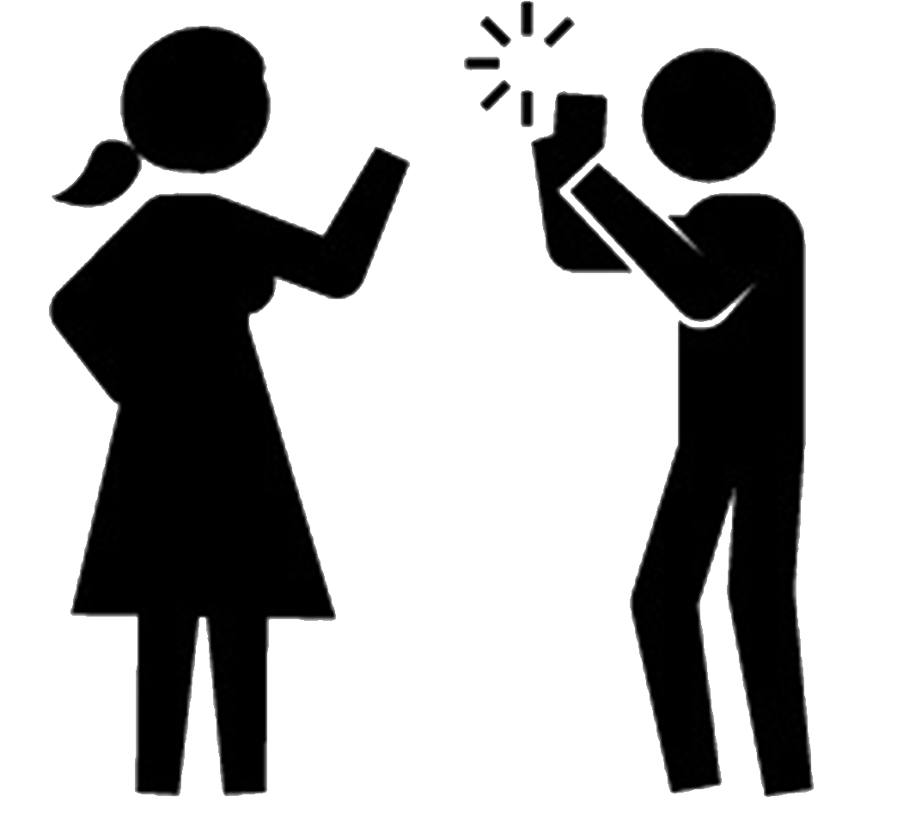
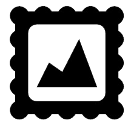

Step 2. Take a present image
This step is the coolest part : you go out and take a picture of the current state of what figures in your original image.
Here are some advice before you go out in the wild!

Find the exact location the picture was taken
Make sure you printed the picture before leaving or on a mobile device.
Once you locate the place your picture was taken, find the orientation of the photograph back in the days.

Orient and frame your picture
Take the printed picture and try to have the same frame as the original picture.
Tips: use roofs, gutter, lampposts, as markers for orienting your picture. Some may not have moved or changed in the past 10 decades.

Take many pictures!
Don't be shy, press the button many times! Try different angles and different settings so that you find the perfect picture.